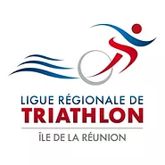

La Fédération Française de Triathon - FFTRI
Au niveau national, ce sport est géré par la Fédération Française de Triathlon (FFTRI), puis par des ligues régionales.
La Fédération Française de Triathlon a été fondée le 21 octobre 1989.
Elle a pour but, notamment de promouvoir, d’organiser et de mener toutes actions propres à développer la pratique du Triathlon, du Duathlon, de I’Aquathlon, du Bike & Run et des disciplines enchaînées (raid). La FFTRI compte en 2023, 61055 licenciés, 993 clubs et 3387 épreuves réparties sur le territoire

La ligue Réunionnaise de Triathlon - LRT
La Ligue Réunionnaise de Triathlon - LRT est une association (loi 1901), affiliée à la Fédération Française de Triathlon. Elle a été créée le 17 décembre 2015. Le but de la Ligue est d’organiser, de développer et de contrôler la pratique du triathlon dans le département de La Réunion.
La LRT se charge notamment d’établir le calendrier des manifestations sportives, d’organiser des championnats, coupes ou challenges au niveau régional, de former ses cadres et d’organiser des stages de perfectionnement d’athlètes ou encore d’apporter une aide technique et matérielle aux personnes et clubs affiliés.